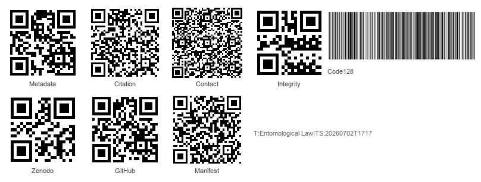
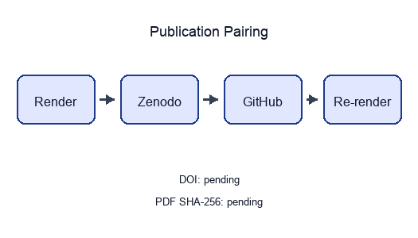

![Figure 1: The 8 registered legal roles an insect can occupy in this release, with the case, statute, species, and milestone evidence encoded for each. Read as: the field is not one doctrine but a set of recurring legal positions that biology can trigger. Why it matters: the figure sets the manuscript’s organizing grammar before the doctrinal sections specialize it. Provenance: src/roles.py and src.metrics.role_coverage_matrix(). Caveat: counts describe the encoded registries, not the entirety of each legal sub-field.](../figures/roles_overview.png)
src/roles.py and
src.metrics.role_coverage_matrix(). Caveat: counts describe
the encoded registries, not the entirety of each legal
sub-field.A Field Map of Insects as Evidence, Threat, Property, Product, Patient, and Weapon
State: unpublished / pending pairing
Pairing: pending — unresolved: - ✗ DOI minted:
pending - ✗ GitHub release URL: pending - ✗
PDF SHA-256: pending
| Field | Value |
|---|---|
| Title | Entomological Law |
| Version | 1.0.0 |
| Concept DOI | pending |
| GitHub | docxology/EntoLaw |
| Zenodo | pending |
| SHA-256 | pending |
| SHA-512 | pending |
../data/transmission_manifest.json.
Structured manifest:
../data/transmission_manifest.json

There is no statute, treatise, or law-school casebook titled
“Entomological Law.” The phrase names a synthetic field — the
convergence zone where the six-legged world repeatedly forces the legal
system to answer questions it was not designed for: Can a fly
testify? Who owns a swarm? Is a bumblebee a fish? Can you patent a
mosquito? May a court excommunicate a weevil? Does a cricket suffer? May
insects be used in war? This reference compiles that field as a
machine-readable and reproducible artifact organized around the legal
role an insect occupies in a given dispute. It encodes 8 legal
roles — witness, regulated threat, protected subject, property,
invention, defendant, moral patient, and weapon — and binds to them 18
landmark decisions, 43 statutes and treaties across 9 categories and 10
jurisdictions, 24 insect taxa, 13 certifying and regulatory
institutions, 44 historical milestones spanning 3676 years, and 5
cross-domain themes that knit the roles together. Every count in this
prose is generated from the source registries under src/,
legal propositions are source-bound in the bibliography, every
externally-sourced statistic written as a numeral is bound to a
verification record in the claim ledger, and every figure caption is
emitted from a source-owned caption registry. The result is both a map
of a genuinely transdisciplinary field and a reproducibility contract:
the same version-controlled inputs regenerate the inventories,
validation report, analytical figures, manuscript variables, and paper
while preserving explicit caveats about registry scope, jurisdictional
reach, and the boundary between what the offline gates prove and what
only a live source check can confirm.
“Entomological law” — or, from the other direction, “legal entomology” — is not a single discipline but a multi-domain complex in which insects and their biology touch legal norms at dozens of points. A bibliometric analysis of the research literature found that “forensic entomology” and “legal entomology” are used interchangeably and span well over a thousand articles across more than a hundred contributing countries [magana2019bibliometric]. This reference treats the field in a broad sense: domains in which insects become objects or instruments of legal regulation.
Recent animal-law scholarship now names “insect law” directly, but this reference uses “entomological law” to keep the lens wider than animal-welfare doctrine: the same organism may enter evidence, quarantine, conservation, food, biotechnology, and weapons law before moral status is even at issue [reddy2025insect_law].
The deeper connective problem is that courts and agencies repeatedly need insect biology to become what science-and-law scholarship calls a serviceable truth: reliable enough for action, bounded enough to expose uncertainty, and explicit enough to be revisited when the evidence changes [jasanoff2015serviceable]. Forensic entomology translates larval development into time; quarantine law translates ecological risk into movement controls; conservation law translates population decline into listing decisions; welfare law translates sentience evidence into moral and statutory thresholds. The same epistemic move recurs across the field.
The second connective problem is classification. Classification systems are not neutral filing cabinets: they allocate visibility, responsibility, and institutional action [bowker1999sorting]. Insects reveal that point with unusual force because they move across ordinary legal boundaries so easily. A fly can be an expert’s clock, a statutory animal, a constitutional hook, or a nuisance depending on which classificatory gate opens first. The field therefore also depends on boundary-work: courts and agencies must decide when entomology is sufficiently scientific for evidence, sufficiently uncertain for precaution, sufficiently economic for trade restrictions, or sufficiently moral for welfare concern [gieryn1983boundary_work; jasanoff2004states_of_knowledge].
The field has no master statute and no single agency, yet it coheres. Its organizing principle is the legal status the insect occupies in a given dispute. The same organism is, in turn, a witness, a regulated threat, a protected subject, property, an invention, a defendant, a moral patient, or a weapon — and each role poses a question the legal system was not built to answer. The 8 roles, their domains, and their core questions are listed below and visualized with their registry evidence in the roles-overview figure.
| Legal role of the insect | Domain | Core question |
|---|---|---|
| Witness / evidence | Forensic entomology | When did death occur, and where? |
| Regulated threat | Quarantine & invasive-species law | May this organism cross a border? |
| Protected subject | Conservation / endangered-species law | Does the state owe this species survival? |
| Property | Common law of wild animals | Who owns this swarm, hive, or specimen? |
| Invention / product | IP, biotech & food law | Can this insect be patented, engineered, or eaten? |
| Defendant | Historical animal trials | Can a pest be tried and punished? |
| Moral patient | Emerging welfare & sentience law | Can an insect be wronged? |
| Weapon | International humanitarian law & biosecurity | May insects be used in war? |
The 8 roles above are not silos; the registry also encodes 5 recurring themes that cut across them, and that synthesis is worth seeing before the per-role sections rather than only after them. The network below previews the connective tissue sec. 11 unpacks in full: it is the map the rest of this reference keeps returning to, so it is placed here as an orientation figure rather than left to surface only at the end.
![Figure 2: Network of the 5 recurring themes that link the legal roles — the definitional problem, the expert-testimony bridge, the biotechnology pivot, the property/conservation mirror, and the ancient/modern rhyme. Edge bundles share a theme colour. Read as: category changes, not species names, are what move a dispute from one legal regime into another. Provenance: src/interconnections.py. Why it matters: the synthesis depends on transfers among categories rather than parallel lists of topics. Caveat: the graph encodes declared thematic links, not statistical association.](../figures/role_interconnections.png)
A typical survey of this material mixes prose summaries of statutes
with anecdotes of famous cases; both rot quickly as section numbers are
recodified and holdings are distinguished. This reference inverts that
pattern. Every legal role, case, statute, taxon, institution, and
milestone cited in the prose comes from a Python registry under
src/, and every count — “18 cases”, “43 statutes”, “24
taxa” — is a double-brace token resolved at build time by
src.manuscript_variables.generate_variables. The discipline
this enforces is the same reproducibility model the wider template uses:
a count that drifts from its registry cannot reach a green PDF without
the manuscript-token closure test flipping red first (sec. 12).
The field is old in more than one way. Its property lineage now reaches back before Rome: the Hittite Laws tariff stolen bees and bee hives, Mishnah Bava Batra treats bees as both beehive property and neighbor-law risk, and Roman law then turns swarms into the classic problem of wildness, sight, and pursuit [hittite_laws_bees; mishnah_bava_batra2_10_bees; mishnah_bava_batra5_3_beehive; justinian533; justinian_digest41]. That lineage also passes through successor-kingdom and East Slavic tariff law: the Salic Law makes stolen bees a named theft subject, Rothari’s Lombard code distinguishes an apiary vessel from bees taken out of a marked tree, and Ruskaia Pravda protects bort signs, bee trees, and removed bees as legally priced forest-apiculture injuries [lex_salica_bees; edictum_rothari_bees; ruskaia_pravda_bees]. Muscovite law then makes the valuation still more granular: the 1649 Sobornoe Ulozhenie separately prices bee trees with and without bees, removed colonies, stolen hives, and deliberate destruction [sobornoe_ulozhenie1649_bees]. Medieval English restatements such as Fleta then carry the occupation problem forward, while the evidentiary lineage begins with the 1235 Sickle Murder recounted by Song Ci in The Washing Away of Wrongs (1247), where flies settling on an apparently clean blade exposed invisible blood and forced a confession; the claim is bound here both to a Library of Congress record for the Chinese text and to McKnight’s scholarly English translation [fleta1290_bees; songci1247; songci_mcknight1981]. Its product-law lineage is old as well: early colonial instruments treated mulberries, silk inputs, silks, and wax as objects of public economic policy rather than merely private agricultural choices [virginia_assembly1619_mulberry; carolina_charter1663_silks_wax]. A Russian and Russian-Imperial threat-law lineage also begins before professional society infrastructure: a 1749 Senate decree made locust extermination a provincial administrative duty, Pallas’s 1781 Icones Insectorum made insects of Russia and Siberia a taxonomic object, and later the chartered Russian Entomological Society, Keppen’s harmful-insect compendium, and Danilevsky’s phylloxera commission report show insect expertise entering administrative governance before modern plant-health law [russian_senate1749_locust_belgorod; pallas1781_icones_insectorum; russian_entomological_society1864_charter; keppen1881_harmful_insects; danilevsky1882_phylloxera]. From there the registry traces 44 milestones across 3676 years — bee property, medieval animal trials, colonial silk policy, succession-based time-of-death estimation, eighteenth- and nineteenth-century pest administration, twentieth-century conservation and biotechnology statutes, and twenty-first-century sentience and gene-drive debates shown in the timeline figure.
![Figure 3: Selected milestones of entomological law across the 3676-year span the registry encodes, from early bee-theft and bee-property rules to the 2026 monarch-listing suit, coloured by legal role. Read as: old evidentiary and property problems keep reappearing inside new biotechnology, welfare, and conservation disputes. Why it matters: the chronology shows recurrence rather than novelty as the field’s basic pattern. Provenance: src/timeline.py. Caveat: a selected chronology, not a comprehensive history.](../figures/timeline.png)
The same arc appears twice in this reference, for two different reasons. The timeline above shows the milestones the law itself created; the figure below shows the sources that document them — every bibliography entry with a parseable date, not just the ones that became milestones. Reading the two side by side up front makes an honesty point before any doctrinal argument starts: the evidence base is not a thin modern layer with a few decorative antiquities, it has real pre-modern depth, and sec. 12 explains exactly how that bibliography is validated.
![Figure 4: Date distribution for every bibliography entry with a parseable year, split into broad bands and individual source-date strips with pre-1700 and 1700-1999 layers separated from the 2000+ consolidation, including labelled pre-1800 Rus’, Muscovite, and Russian-Imperial legal/scientific sources plus pre-1950 Russian and Soviet entomology/legal sources. Read as: EntoLaw’s evidence base is anchored by early legal, regulatory, and treatise sources but interpreted through modern scholarship, cases, statutes, and official materials. Why it matters: the figure makes the historical depth of the citation stack visible instead of leaving it implicit in the reference list. Provenance: manuscript/references.bib parsed by src.viz_citation_dates. Caveat: the date is the bibliography year, so modern editions appear at edition date unless the bibliography declares a source-date anchor.](../figures/citation_dates.png)
This reference is a map, not a treatise. The registries are curated to anchor each role with its leading authorities, not to enumerate every decision, instrument, or species; the figures throughout describe the encoded registries, and their captions state that scope explicitly. Sections sec. 3 through sec. 10 treat each role in turn; sec. 11 revisits the synthesis figure above in full, theme by theme; and sec. 12 documents the reproducibility contract, the claim ledger, and the honesty boundary behind the citation-date figure above.
Forensic entomology is the oldest evidentiary and most legally mature corner of the field: the use of arthropod evidence — chiefly necrophagous blow flies (Calliphoridae) colonizing remains — to estimate the post-mortem interval (PMI), detect corpse movement, prove neglect, and recover toxicology from larvae. Of the 8 legal roles, the witness role is the most case-driven: 5 of the roles carry modern reporter case law, and the witness role alone accounts for 6 of the 18 registered decisions, as shown in the case-by-role and jurisdiction figures.
![Figure 5: The 18 registered decisions grouped by the legal role of the insect; 5 of 8 roles carry modern reporter case law, while the defendant, welfare, and weapon roles are history- and statute-driven. Read as: litigation is concentrated where insects enter court as evidence, property, or regulated biological facts. Why it matters: it separates litigated doctrine from roles that are legally important but less case-law dense. Provenance: src/cases.py via src.metrics. Caveat: only citation-parseable decisions are encoded here.](../figures/cases_by_role.png)

Entomologists generally calculate a minimum PMI — the time since first colonization — using accumulated degree-days, summing temperature above a developmental threshold and matching it to species-specific growth tables. For older remains they fall back on the succession model of arthropod waves first systematized by Jean-Pierre Mégnin in La Faune des Cadavres [megnin1894]. Catts and Goff’s 1992 review marks the pre-Daubert professionalization point: forensic entomology was already being synthesized as a legal-scientific field around PMI, succession, collection, environmental temperature, and casework limits before reliability gatekeeping became the modern evidentiary idiom [catts_goff1992_forensic_entomology]. A sub-branch, entomotoxicology, recovers drugs and metals from maggots when blood and tissue are gone — substances that themselves distort larval growth and so must be accounted for in the estimate. The foundational legal text remains Greenberg and Kunich’s Entomology and the Law, written expressly to prepare both the entomologist and the trial lawyer for the courtroom [greenberg2004].
Insect testimony enters US courts through the same gates as all scientific evidence. Under Frye the technique must be “generally accepted” in its field [frye1923; cornell_frye]; under Daubert the trial judge is a reliability gatekeeper weighing testability, peer review, error rate, acceptance, and fit [daubert1993]; and Kumho Tire extends that inquiry to all expert testimony [kumho1999]. Federal Rule of Evidence 702 codifies the requirement that reliable principles be reliably applied to the facts [cornell_fre702]. That chronology matters: the pre-2000 source base shows a discipline with articulated methods before the courtroom asked the Daubert question, so the recurrent dispute is not whether insect succession can ever be law-relevant but whether the expert controlled the biological assumptions in the case at hand. In the reported authorities encoded here, disputes focus less on excluding forensic entomology wholesale than on application — wrong geographic dataset, microsite temperature error, species misidentification — and whether reliable principles were reliably applied to the case facts.
The registry pins the field’s evidentiary arc from the 1235 Sickle Murder forward. Bergeret’s original Annales d’hygiène publique et de médecine légale report is the Western hinge: he treated pupae, larvae, and metamorphosis as medico-legal evidence for a mummified newborn’s time of death, making insect development part of a judicial fact pattern rather than a natural-history aside [bergeret1855_infanticide]. Mégnin then systematized the succession model in a dedicated forensic monograph before modern expert-evidence doctrine existed [megnin1894]. The modern arc runs through the Buck Ruxton “Jigsaw Murders” that produced the first UK conviction by entomology [nhm_maggots], the Pennsylvania Supreme Court’s affirmation of PMI testimony in Commonwealth v. Auker [auker1996], the Canadian R. v. Truscott reversal decades after conviction [truscott2007], and the Kirstin Lobato exoneration built on the telling absence of blowfly colonization, which proved death after dark [innocence_lobato]. The field’s cautionary tale is People v. Westerfield, the celebrated “battle of five entomologists” whose ten-day divergence led the jury to discard the entomology entirely [westerfield2019].
Certification in North America runs through the American Board of Forensic Entomology (ABFE) [abfe_cert]. The registry encodes 4 forensic-entomology institutions, including the ABFE, the European Association for Forensic Entomology (EAFE), the North American Forensic Entomology Association (NAFEA), and the National Institute of Standards and Technology (NIST) Organization of Scientific Area Committees (OSAC) task group. The 2009 National Academy of Sciences report on forensic science applies with comparatively gentle force here, because entomology’s biological grounding is stronger than pattern-matching fields, but its calls for standardized protocols and documented error rates remain only partly met [nas2009forensic]. EAFE’s peer-reviewed best-practice guideline and field-wide research roadmaps frame the remaining work as a chain-of-custody, sampling, preservation, identification, reporting, and basic-to-applied research problem rather than a single admissibility rule [amendt2007bestpractice; tomberlin2011roadmap]. Recent global case-report scholarship makes the same point in procedural form: forensic entomology needs comparable reports because litigation turns on whether biological inference can be audited after the fact [kotze2021case_report]. OSAC’s proposed standard for collecting and preserving terrestrial entomological evidence makes the same standardization frontier concrete, shifting the problem from whether protocols can be specified to how consistently investigators apply them [osac2025entomological_evidence].
Where forensic law asks insects to speak, regulatory law tries to stop them from moving. The architecture is dense and federal. In the registry the threat role is statute-driven rather than case-driven: it is anchored by 18 instruments spanning the quarantine and public-health categories, summarized in the statutes-by-category figure.
![Figure 7: The 43 registered instruments grouped across 9 structural categories — forensic, quarantine, conservation, property, biotech/IP, food, welfare, public-health, and warfare. Read as: regulation follows the legal problem insects pose, not insect taxonomy itself. Why it matters: it shows why the same organism can move between food, biosecurity, conservation, and weapons law. Provenance: src/statutes.py via src.metrics. Caveat: a representative backbone, not every instrument in each category.](../figures/statutes_by_category.png)
The modern statute sits on a nineteenth-century administrative architecture rather than a blank slate. Britain’s Destructive Insects Act made Colorado beetle an object of border prohibition, crop destruction, entry on land, official records, compensation, and penalties [destructive_insects1877]. Across North America, L. O. Howard’s 1898 USDA compilation shows states and provinces already translating insect damage into inspection offices, plant-trade controls, public-nuisance abatement, and model legislation before a national plant-quarantine statute existed [howard1898_injurious_insect_laws]. California’s 1897 horticulture act is the sharpest example: scale insects, codling moth, and other destructive orchard pests could trigger county horticultural boards, entry and inspection, notice to eradicate or destroy eggs and larvae, summary abatement as a public nuisance, county-paid costs, and liens on the infested premises [california_horticulture1897]. India’s Destructive Insects and Pests Act later cast insects, fungi, and other crop pests as import and interprovincial-movement risks [india_destructive_insects1914]. Britain’s Plant Health Act 1967 then consolidated the 1877-1927 pest-law lineage, defining pests broadly enough to include insects at any life stage and preserving landing-control and destruction powers for articles likely to introduce a pest [uk_plant_health1967]. In the United States, the Federal Insecticide Act treated insect-killing chemistry as a misbranding and adulteration problem in commerce, while the Plant Quarantine Act gave USDA authority over import exclusion, interstate quarantine, inspection, disinfection, certification, and a Federal Horticultural Board that included the Bureau of Entomology [federal_insecticide1910; plant_quarantine1912]. The point is analytical: before modern environmental law, insect threat was already split among border control, local crop police powers, chemical-product integrity, federal entomology, and property-backed abatement.
Russian and Soviet sources add a second route into the same architecture, and the route starts before the Soviet state. A 1749 Governing Senate decree on locusts in Belogorod Province ordered local authorities to trample and burn newly emerged swarms, plow breeding places, use smoke and noise against flying locusts, and report repeatedly to the Senate; in that instrument the insect is not just a crop injury but an administrative emergency with provincial labor, animal power, fire, plowing, ritual, courier, and reporting dimensions [russian_senate1749_locust_belgorod]. Pallas’s 1781 Icones Insectorum Praesertim Rossiae Sibiriaeque Peculiarium adds the scientific bridge: insects of Russia and Siberia became objects that imperial natural history could name, illustrate, and compare before later agricultural law asked which named species required control [pallas1781_icones_insectorum]. The Russian Entomological Society’s 1864 charter then made entomology a recognized expert institution; Keppen’s 1881-1883 Vrednye nasekomye, issued through the Department of Agriculture and Rural Industry, translated harmful insects into an administrative catalogue of species, crops, and control problems; and Danilevsky’s 1882 phylloxera commission report framed an insect as a contagion-like object of eradication, customs control, host-plant destruction, and quarantine [russian_entomological_society1864_charter; keppen1881_harmful_insects; danilevsky1882_phylloxera]. Uvarov’s 1921 revision of Locusta then made locust swarming a problem of phase, periodicity, and migration rather than a mere episodic plague; that entomological move helps explain why a Soviet decree could treat locust control in the USSR-Afghanistan borderlands as an administrative and diplomatic problem [uvarov1921_locusta_phase; snk_locust_afghanistan1934]. Pavlovsky’s natural-focality doctrine did comparable work for vector-borne disease: ticks, mosquitoes, and other arthropod vectors became parts of landscape-specific disease foci that public-health authorities could map, surveil, and manage [pavlovsky1939_natural_focality; pavlovsky1946_vector_nidality]. The comparative point is that Russian entomological governance was administrative before it was Soviet and ecological before it was environmental. Law did not merely name a pest; it borrowed from natural history and entomology to decide which institution, movement, landscape, host plant, or vector relation should trigger state action.
The master contemporary statute is the Plant Protection Act, cited here at 7 U.S.C. §§ 7701–7786, which empowers the U.S. Department of Agriculture’s Animal and Plant Health Inspection Service (APHIS) to prohibit movement, declare quarantines, require permits, and seize or destroy infested articles [ppa2000; usc7_7712]. Moving a live insect interstate or importing one requires an APHIS permit and an approved containment facility. The rogues’ gallery of regulated pests is encoded in the species registry: the spotted lanternfly under active quarantine [aphis_slf], the Asian longhorned beetle under eradication, the emerald ash borer whose federal quarantine was lifted in 2021, and the northern giant hornet — the “murder hornet” — declared eradicated from the United States in 2024, the first Vespa eradication in North America [guardian_hornet].
Above the US sits the International Plant Protection Convention, whose International Standards for Phytosanitary Measures (ISPMs) serve as the benchmark under the World Trade Organization (WTO) Agreement on the Application of Sanitary and Phytosanitary Measures (SPS Agreement) for judging whether a quarantine is science-based or a disguised trade barrier [ippc_ispm]. IPPC’s pest-status standard makes pest records, status categories, and uncertainty part of the legal infrastructure for deciding whether a pest is present in an area [ippc_ispm8]. The European Union (EU) runs its own priority-pest list and plant-passport system under the Plant Health Law [eu2016_2031]. The EU also treats invasive alien species as a separate Union-wide risk category: Regulation (EU) 1143/2014 creates a Union list whose species face restrictions on keeping, importing, selling, breeding, growing, and release, and the European Commission says the fourth update of that list entered into force on 7 August 2025 [eu1143_2014; ec_ias2026].
That architecture makes invasive-insect law a risk-allocation system, not merely a list of pests. The legal decision is whether uncertain ecological evidence justifies stopping trade, seizing property, requiring treatment, or spending public money on surveillance and eradication. Bioeconomic scholarship on invasive species frames that choice as an institutional problem of pathways, probabilities, expected harms, and management cost under uncertainty [lodge2016bioeconomics_invasive_species]. Insects make the problem unusually sharp because the same shipment, nursery stock, package, or animal wound can be legally ordinary until an expert identifies a life stage, pathway, or reproductive risk that moves it into quarantine law.
The Lacey Act’s injurious-species provision at 18 U.S.C. § 42 is a strict-liability criminal statute, but it conspicuously does not list insects, deferring to the Plant Protection Act for plant pests and leaving non-plant-pest insects in a regulatory gap [lacey42; crs_lacey]. Recent enforcement marks the limits of secondary liability: in Amazon Services LLC v. USDA the D.C. Circuit held that aiding or inducing a regulated-pest movement requires conscious and culpable participation, not mere fulfilment services [amazon2024]. And in a Minnesota tree-infestation suit the claim failed for lack of an entomological expert — proof that forensic and regulatory entomology converge, because invasive-pest causation cannot be shown without expert insect testimony [minnlawyer_lac].
The same regulatory logic extends to insects as disease vectors. California has operated mosquito-abatement and vector-control districts since 1915 under a statute declaring organized public programs the best protection against vector-borne disease [ca_vector_hsc2001], and federal mosquito-control funding has been advanced as national public-health law [asthovector]. International animal-health law adds a standards layer: WOAH’s Terrestrial Code includes a chapter on surveillance for arthropod vectors of animal diseases, showing how vector law crosses animal health, human health, and trade [woah_vector_surveillance]. This vector-control strand is where the threat role brushes against the weapon role of sec. 10.
The mirror image of quarantine law: instead of exterminating insects, the state guarantees their survival. The species registry encodes 6 taxa in the protected role — from the Schaus swallowtail, among the first insects ever listed, to the rusty patched bumble bee, the monarch, and the American burying beetle, summarized in the species-by-role figure.
![Figure 8: The 24 registered taxa grouped by the legal role they illustrate, from forensic blow flies to quarantined pests, listed species, owned honey bees, engineered and edible insects, the trial weevils, and a weaponized flea. Read as: the same biological class can become evidence, asset, enemy, product, or rights candidate depending on legal context. Why it matters: legal role, not species identity alone, determines which institution acts. Provenance: src/species.py. Caveat: an illustrative set chosen to anchor each role, not a taxonomic survey.](../figures/species_by_role.png)
The federal Endangered Species Act (ESA), cited here at 16 U.S.C. § 1531, defines “fish or wildlife” to expressly include any “arthropod or other invertebrate,” putting non-pest insects within the statute’s eligibility frame [esa1973; usc16_1532]. Conservation-law scholarship has treated that textual inclusion as more than a curiosity: it is the doctrinal opening through which ecologically central but politically obscure organisms can become federal legal subjects [lugo2006insect_conservation_esa]. Recent conservation science now reviews invertebrate listing history and threats as an ESA problem in its own right, reinforcing that insects are not merely edge cases inside vertebrate-centered conservation law [shirey2025invertebrate_esa]. Among the first insects listed was the Schaus swallowtail in 1976 (with the Bahama swallowtail); the Delhi Sands flower-loving fly, listed in 1993, became the first and only fly — and the unlikely protagonist of a constitutional landmark.
In National Association of Home Builders v. Babbitt, cited at 130 F.3d 1041, developers argued Congress lacked Commerce Clause power over a fly that lives entirely within California; a divided panel upheld the protection, and legal scholarship quickly recognized the Delhi Sands flower-loving fly as a test of whether tiny, local, economically inconvenient species could carry national ecological value [homebuilders1997; nagle1998delhi]. The “take” prohibition reaches habitat modification under Babbitt v. Sweet Home, so insect habitat enjoys the same protection as the insects themselves [sweethome1995]. State law is widening the institutional map as well: Colorado’s invertebrate conservation law adds rare plants and invertebrates to its nongame conservation statute and authorizes voluntary programs to conserve, protect, and perpetuate invertebrates [co_hb24_1117].
California produced the field’s most creative ruling. In Almond Alliance of California v. Fish & Game Commission, cited at 79 Cal.App.5th 337, the Court of Appeal held that bumblebees are “fish” under Fish & Game Code § 45, because that section’s definition of “fish” includes “invertebrate” — allowing four Bombus species to be listed under the California ESA [almond2022; cesa_fgc45; xerces_bumblebees]. It is the single most-cited “insect is a fish” holding in the field and links conservation law directly to the definitional question that recurs throughout (sec. 11). The monarch butterfly was proposed for threatened listing in 2024; as of June 29, 2026, the U.S. Fish and Wildlife Service (FWS) still described the species as proposed and said protections would not apply until a final rule became effective [fws2024monarch; fws_monarch_status].
The Convention on International Trade in Endangered Species of Wild Fauna and Flora (CITES) supplies the trade-law counterpart: its official checklist identifies Ornithoptera alexandrae — Queen Alexandra’s birdwing — as an insect with current listing I, and domestic implementing legislation then makes covered trade legal, sustainable, and traceable [cites1973; cites_checklist2026]. The global biodiversity layer broadens the frame: the Kunming-Montreal Global Biodiversity Framework gives insect conservation a treaty-scale target architecture, while insect-focused conservation scholarship warns that existing biodiversity indicators may fail to show whether policy is actually recovering insect populations unless insect-focused indicators are built [cbd_gbf2022; bladon2026gbf_insect_conservation]. EU conservation law is now more explicit about pollinators as a protected infrastructure: the Nature Restoration Regulation sits alongside the EU Pollinators Initiative, and the European Commission says that EU policy commits to reversing wild-pollinator decline by 2030 while reporting that 1 in 3 bee, butterfly, and hoverfly species is proven to be in decline and 1 in 10 bee and butterfly species is threatened with extinction [eu_nature_restoration2024; ec_pollinators2026]. Driving all of this is the science of the “insect apocalypse”: a landmark study found a decline of more than 75 percent — a 76 percent seasonal and 82 percent mid-summer fall — in flying-insect biomass over 27 years of monitoring in protected areas [hallmann2017], a finding amplified by global reviews and scientists’ warnings about entomofauna decline and its interacting pressures [sanchezbayo2019; wagner2021insectdecline; cardoso2020scientists_warning]. The legal-protection gap is now measurable as well as rhetorical: a 2026 PNAS study reports that the conservation status of 88.5 percent of described North American insect and arachnid species is unknown, while 94.7 percent of U.S. insects and arachnids at-risk throughout their range are not protected by any state or federal law [esa_position2021; pnas2026insects].
The legal difficulty is that insect value is often infrastructural rather than charismatic. Pollination, pest suppression, nutrient cycling, waste processing, and food-web support are ecological services before they are individualized legal interests, which means law must translate diffuse background work into administrable species, habitat, trade, and take decisions [losey2006economic_value_insects]. That translation explains why this role touches both property and threat: the same insect can be valuable enough to protect in one setting and disruptive enough to suppress in another.
When an insect is neither evidence, threat, nor protected subject, it may simply be owned. No insect has generated more property law than the honeybee, and the registry pins 5 decisions to this role.
The oldest directly verified property layer is not Roman. The Hittite Laws treat stolen bees in a swarm and stolen bee hives as tariffed wrongs, while Hittite apiculture scholarship shows that honey and bees were economic and ritual resources inside a wider cuneiform record [hittite_laws_bees; demirel2022_hittite_apiculture]. Mishnah Bava Batra adds a legal-contract layer: a sold beehive carries the bees in it, and beehive produce is handled through swarms and honeycombs [mishnah_bava_batra5_3_beehive]. Roman law then classed bees as ferae naturae — wild by nature, owned only through capture and lost when they abandon the animus revertendi, the intention to return, a legal gloss on the real swarming and absconding behavior of honeybee colonies [johnson2023honeybeebiology]. The Institutes say a swarm on another’s tree is not owned until hived, while the Digest adds the pursuit rule that a swarm leaving a hive remains the keeper’s only while it is visible and not difficult to follow [justinian533; justinian_digest41]. Early medieval law did not merely repeat that Roman template. The Salic Law gives stolen bees their own theft title, while Rothari’s Lombard code separates theft from an apiary vessel from taking bees out of another person’s marked tree; those clauses make enclosure, marking, and woodland claim legible before the later common-law vocabulary arrives [lex_salica_bees; edictum_rothari_bees]. The Russian line is not derivative background. Ruskaia Pravda punishes destruction of bort signs, cutting of bee trees, and removal of bees, while the 1649 Sobornoe Ulozhenie separately values a bee tree with bees, a tree without bees, removed bee colonies, stolen hives with bees, and deliberate destruction of a hollow bee tree [ruskaia_pravda_bees; sobornoe_ulozhenie1649_bees]. That distinction matters: Muscovite law could price the insect colony, the marked arboreal habitat, and the hive-like human apparatus as separable legal harms. Early Irish Bechbretha is a separate legal technology rather than a mere parallel: its bee judgments organize hives, swarms, bee trespass penalties, and distraint of bees, so the insect is at once livestock, neighbor-law hazard, and distrainable object [bechbretha_bee_judgments; bechbretha1983]. Bracton repeats the hiving and pursuit rules in English legal vocabulary; Fleta gives the same occupation rule in medieval English legal Latin, using bees to show that enclosure and practicable pursuit matter more than mere presence on the owner’s land; and the Welsh laws give both valuation rules for bee stocks and swarms and recovery rules for bees that enter another person’s skep [bracton_bees_thorne; fleta1290_bees; welsh_laws1841_bees]. Recent scholarship on early medieval apiculture captures the broader shift: successor-kingdom legislation often moved bees from pure wildness toward beekeeper property, while comparative Indo-European scholarship treats Hittite, Irish, and later bee-law parallels as suggestive but not proof of a single inherited rule [martinez_jimenez2022_apiculture_law; joseph2018_comparative_bee_law]. Blackstone then carried the Roman structure into common-law commentary, describing hived and reclaimed bees as qualified property under natural and civil law [blackstone1766_bees]. The common law also carried the broader wild-animal doctrine forward through the Case of Swans [caseofswans1592]. The leading modern English authority, Kearry v. Pattinson at [1939] 1 KB 471, holds that there is no right to pursue a swarm onto a neighbour’s land [kearry1939]; the leading American authority, Goff v. Kilts at 15 Wend. 550, recognizes a qualified property in bees so long as the owner keeps them in sight and pursues them [goff1836].
That doctrine is not just a bee-specific oddity. Property theory has long treated possession as a communicative act: the would-be owner must give the world a recognizable signal that a thing has been appropriated [rose1985possession_property]. Bees strain that theory because the signal is biological and relational rather than purely physical. A hive, a marked box, visible pursuit, disease records, and apiary registration all become ways of making mobile insects legible as property.
The same source line also reaches tithe and fiscal argument. Selden’s Historie of Tithes and Elderfield’s later defense of tithes both preserve the bee clause as part of a wider early-modern debate over whether profit from bees belongs with woods, meadows, waters, mills, fisheries, gardens, and trade [selden1618_tithes_bees; elderfield1650_tythes_bees]. That matters analytically because it moves bees from possession alone into accounting: law is not only asking who captured the swarm, but which institution can claim a share of the bee-derived yield.
The neighbor-injury pattern is much older than modern apiary statutes. Mishnah Bava Batra’s mustard-and-bees rule places bees inside neighbor-law distance doctrine, and Bava Batra’s later discussion makes the conflict reciprocal: one side can complain about mustard harming bees, while the other can complain about bees eating mustard plants [mishnah_bava_batra2_10_bees; talmud_bava_batra18a_bees]. Quintilian’s legal declamation imagines a poor beekeeper whose bees die after a rich neighbor poisons flowers, framing the loss as wrongful damage rather than a mere natural misfortune [quintilian_decl13_bees]. Soviet apiculture supplies a modern comparative bridge: Markushkin’s 1927 legal handbook for beekeepers, catalogued as answering legal questions from Soviet apiarists, shows bee ownership becoming an advice-and-administration problem inside early Soviet agricultural life [markushkin1927_beekeeper_legal_handbook]. Modern law translates that same problem into regulation and tort. The federal Honeybee Act restricts bee importation, and states layer apiary registration, disease protocols, and Africanized-bee controls on top [honeybee1922]. Keeping bees near neighbours carries tort exposure: in Ferreira v. D’Asaro a Florida court addressed liability for sting injuries from hives maintained close to a residential property line [ferreira1963]. The same property/tort logic reaches the structures insects damage — a pest-control firm faced professional liability for a negligent wood-destroying-insect inspection in Horsch v. Terminex [horsch1993]. Bees are now serious crime targets as well: within California’s almond-pollination economy, large-scale hive thefts have been prosecuted as agricultural or livestock theft.
The honeybee one can own and the rusty patched bumble bee the state now protects (sec. 5) sit on opposite ends of the same ferae naturae doctrine — a mirror symmetry taken up directly in sec. 11.
The newest frontier: insects deliberately engineered, patented, farmed, and eaten. The registry pins 3 foundational decisions and 5 taxa to this role, from the Oxitec mosquito to the house cricket, the yellow mealworm, the black soldier fly, and the silkworm.
Since Diamond v. Chakrabarty, cited at 447 U.S. 303, living organisms are patentable subject matter — “anything under the sun that is made by man” [chakrabarty1980]. Ex parte Allen extended this to multicellular animals [exparteallen1987], and the Harvard OncoMouse confirmed it for whole engineered animals [oncomouse1988]. Insects sit squarely within this regime — genetically modified and sterile-insect lines, hundreds of Bacillus thuringiensis patents, silk inventions, and a fast-growing insect-biomimicry sector — bounded only by the statutory bar on patenting humans.
The 1986 Coordinated Framework splits jurisdiction over genetically modified insects among the Environmental Protection Agency (EPA), APHIS, and the Food and Drug Administration (FDA) [coordinated1986]. The flagship case is Oxitec’s engineered Aedes aegypti, released in the Florida Keys under an EPA experimental-use permit [oxitec_epa]. WHO guidance now supplies the public-health testing baseline for genetically modified mosquitoes, emphasizing safe, ethical, and rigorous staged evaluation before deployment [who_gm_mosquitoes2021]. EPA’s current pesticide-law posture is correspondingly procedural and risk-pathway specific: its FIFRA Scientific Advisory Panel materials ask how to determine the absence of novel proteins in the saliva of genetically engineered female mosquitoes, while a May 27, 2026 EPA fact check stated that the prior experimental-use permit had expired and that no genetically engineered mosquito releases were then authorized in the United States [epa_ge_mosquito_sap2025; epa_ge_mosquito_factcheck2026]. Gene drives — constructs that force inheritance through wild populations — are governed by general biosafety and biotechnology instruments rather than a deployment-specific insect regime, a governance mismatch emphasized by early regulatory proposals, consensus reports, and responsible-innovation scholarship [oye2014gene_drives; cartagena2000; nasem2016genedrives; fisher2018genedrives]. A later implementation review for gene-drive modified mosquitoes sharpens the institutional point: product definition, transboundary movement, market entry, and the role of national, regional, and multinational authorities are design questions, not late-stage paperwork [james2023gene_drive_policy]. The Sterile Insect Technique underpins the screwworm-eradication program, which re-entered the U.S. legal and veterinary agenda when New World screwworm was confirmed in a calf in Zavala County, Texas, on June 3, 2026; the Texas Animal Health Commission later described an established infested zone, quarantine limits on movement of warm-blooded animals, and joint federal-state surveillance and response work [tahc_nws2026].
The EU leads via the Novel Food Regulation, cited at Regulation (EU) 2015/2283, which has authorized several insect products — house cricket, yellow mealworm, migratory locust, and lesser mealworm among them — each through an individual implementing regulation and European Food Safety Authority (EFSA) opinion [eu2015_2283; ec_insect_novel_foods2026]. Comparative food-law scholarship treats the EU’s authorization model as unusually explicit relative to many national systems [lahteenmaki2021insectfoodfeed]. The United Nations food-and-feed literature supplies the policy backdrop: insects are framed simultaneously as food security infrastructure, waste-conversion technology, and farmed animals [fao2013edible_insects]. The pre-2000 US record already carried the central ambiguity: FDA’s 1988 wheat-filth compliance guide used the adulteration provision to police insect-damaged grain, while DeFoliart’s Food Insects Newsletter and 1999 review framed entomophagy as a food-security, ecological, and cultural-bias question rather than simply a contamination problem [fda_cpg_wheat_filth1988; food_insects_newsletter1988; defoliart1999_insects_as_food]. The US does not have a single insect-food pathway comparable to the EU’s novel-food authorizations: edible insects sit awkwardly between the adulteration and “filth” provisions of the Food, Drug, and Cosmetic Act and the Generally Recognized as Safe (GRAS) framework [ffdca342; fda_defect_levels]. But US state law is beginning to name insect protein as a product category: Utah’s H.B. 138 requires labeling for foods containing plant or insect-based meat substitutes, making insect substitutes legible as alternative-protein products rather than mere contaminants [utah_hb138_2025]. On the feed side, the EU has progressively relaxed its post-bovine spongiform encephalopathy (BSE) feed ban to admit processed insect protein, beginning with aquaculture [eu2017_893]. A recent EU legal-barriers study adds a live-feed boundary: SCoPAFF clarified that live insects may be used as feed in the EU except for ruminants [ziety2026_insect_farming_barriers].
Bioprospecting insect venom peptides, antimicrobials, and silk proteins implicates the Nagoya Protocol’s sovereignty and benefit-sharing duties [nagoya2010]. Sericulture is a historically deep regulatory domain in its own right: Virginia’s first assembly already made mulberry planting and silk-flax work a legal development duty, Hartlib’s Virginian silk-worm pamphlet framed silkworm rearing and mulberry planting as public industry, Virginia’s later mulberry-tree act continued that statutory infrastructure, and the Carolina charter treated silks and wax as duty-favored colonial commodities [virginia_assembly1619_mulberry; hartlib1655_silkworm; virginia_mulberry1658; carolina_charter1663_silks_wax]. Georgia Trustee records show the same administrative impulse in practice, tracking public mulberry nurseries and settler progress in silk culture, while Atlantic-world sericulture scholarship explains why imperial administrators kept trying to make silkworm cultivation a development program [egmont_georgia_trustees1736; marsh2020_england_virginia_sericulture; marsh2020_lower_south_sericulture]. India’s Central Silk Board Act continues that pattern by making quality-controlled silkworm biology a matter of statutory public interest [csb1948]. This domain loops back to conservation (the biotechnology value of species was a Commerce Clause hook in sec. 5) and forward to welfare (sec. 9), since industrial insect farming raises animals at a scale no prior welfare regime contemplated.
Across late medieval and early modern Europe, courts literally prosecuted insects. This is the field’s most astonishing chapter, and its most history-driven: the registry encodes no modern reporter case for the defendant role, but 5 timeline milestones and the trial weevils themselves carry it. The source base now has a clearer pre-1700 core rather than only a nineteenth-century retrospective layer. Chasseneuz’s 1581 consilia place insect prosecution inside learned legal opinion; Bailly’s 1668 treatise on monitories and a pleading against insects shows the genre persisting as a procedural form; Ménabréa’s 1846 Savoy academy study and Evans’s 1884 Atlantic article then organize and translate that archive for modern readers [chasseneuz1581_consilia; bailly1668_monitoires_insectes; menabrea1846_animal_judgments; evans1884_bugs_beasts; evans1906; beirne1994_evans].
The jurist Bartholomew Chassenée built his career defending vermin and wrote the first legal treatise on insect prosecution. His own consilia matter because they move the argument upstream from antiquarian retelling into pre-1700 legal reasoning: the insect problem is framed through summons, representation, competent forum, sentence, and the distinction between anathema and excommunication [chasseneuz1581_consilia]. Evans’s 1884 account remains useful because it treats the Chassenée episode as law rather than folklore: notice, default, counsel, jurisdiction, judge, and forum all matter before any malediction can issue [evans1884_bugs_beasts]. Ménabréa supplies the complementary French documentary frame, including the St-Julien materials and a preserved “plea for the insects” that makes the insects procedurally visible even though they remain nonrational pests [menabrea1846_animal_judgments]. Bailly’s later pleading against insects tightens the point: early modern procedure could script advocacy around insect populations without making insects ordinary moral agents or rights-bearing persons [bailly1668_monitoires_insectes]. The vine-weevils of St-Julien were first treated as a divine scourge and later met with a proposed preserve for the insects; earlier proceedings against the slugs of Autun round out the registry’s defendant milestones [evans1906].
These trials are not merely curiosities. They separate procedure from personhood with unusual clarity: the court can stage notice, representation, and sentence around an insect population without deciding that insects possess moral agency or ordinary legal capacity. That is why the defendant role matters to modern law. The 1587 offer of a land preserve for the weevils foreshadows modern critical-habitat designation (sec. 5), and the medieval debate over whether an animal can be a defendant prefigures the modern debate over whether it can be a rights-holder (sec. 9). Entomological law repeatedly uses legal form to manage biological agency: the insect can be summoned, protected, patented, quarantined, or excluded before the legal system has a stable theory of what kind of subject it is. The defendant role is thus the historical hinge of the field’s two most forward-looking questions, a connection drawn out in sec. 11.
The field’s living edge. The question is no longer whether an insect can testify or be owned, but whether it can be wronged. The registry pins 1 taxon to this role as an exemplar — the fruit fly — and grounds the role in emerging legislation rather than reporter case law.
The pre-2000 baseline was already explicit but cautious: Eisemann and coauthors asked whether insects feel pain and treated nociception, neural organization, behavior, and learning as biological tests that did not map neatly onto vertebrate pain doctrine [eisemann1984_insect_pain]. A London School of Economics (LSE) review later built a multi-criterion sentience framework from a large body of studies [lse_birch2021]. The UK Animal Welfare (Sentience) Act 2022, cited at Animal Welfare (Sentience) Act 2022, acted on it: its interpretation section defines “animal” to include any vertebrate other than humans, any cephalopod mollusc, and any decapod crustacean, and reserves a regulatory power to extend coverage to other invertebrates [uksentience2022]. The Animal Sentience Committee now makes the insect question institutionally visible: in January 2026 it said discussions around animal sentience were gathering momentum for some insects and arachnids, and recommended clear processes for reviewing sentience evidence so legislation can be updated in time [uk_asc_definitions2026]. The US Animal Welfare Act draws the opposite boundary from within federal animal-welfare law: USDA describes the statutory definition as centered on named taxa and other warmblooded animals, leaving insects outside that baseline [usda_awa2026]. Strikingly, the comparative-evidence literature finds that adult flies and cockroaches satisfy a majority of the established sentience criteria — scoring higher than some of the very decapods the Act already covers — and has begun to ask whether routine insect research should itself adopt welfare review [gibbons2022; crump2023insectwelfare]. Recent ethical scholarship pushes the same debate beyond proof of pain alone, arguing that precaution and intrinsic value can matter when invertebrate sentience remains hard to demonstrate conclusively [desouzavalente2025invertebrate_sentience].
EU law shows the same exclusion. Directive 2010/63/EU, governing animals in scientific procedures, systematically leaves out insects [eudir2010_63], and the Treaty on the Functioning of the European Union (TFEU)’s recognition of animals as “sentient beings” is not self-executing and in practice protects almost exclusively vertebrates [tfeu_art13]. The stakes are scale: Rethink Priorities estimates that roughly 1 trillion to 1.2 trillion insects are raised on farms annually for food and feed, prompting farmed-insect welfare proposals that must move beyond sentience alone to slaughter, stocking density, handling, and environmental conditions [rethink_farmed_insects; vanhuis2021welfare; barrett2023farmed_insect_welfare]. Animal-law critique of insect-based agriculture adds a second warning: sustainability framing can obscure industrial scale, feed-chain substitution, and welfare costs rather than resolving them [reddy2024insect_agriculture]. The legal imagination is broader still: the path from property to personhood runs through proposals for living-property status, rights for natural objects, legal personhood at the boundaries of biological and artificial agency, and evolutionarily inclusive ethics [favre2010living_property; stone1972trees; rowe2025insect_ai_personhood; mikhalevich2020minds]. This domain is the philosophical counterweight to the commercialization of sec. 7 — the same industrial farming that food and feed law encourages is what welfare law now scrutinizes.
Finally, insects as instruments of war, biosecurity, and international humanitarian law (IHL). The registry carries this role through 3 historical milestones and 1 taxon — the plague-bearing oriental rat flea — rather than through litigation.
Japan’s Unit 731 conducted plague-flea air-drops; the Ningbo attack of 1940 alone caused major civilian casualties, with broader operations linked to large-scale civilian deaths. Cold War programs followed, including the US Operation Big Itch, which tested uninfected-flea dispersal.
The Biological Weapons Convention (BWC), cited at Biological Weapons Convention (1972), treats insect vectors as covered means of delivery under its General Purpose Criterion, though ambiguity persists around uninfected insects used in crop warfare [bwc1972]. That ambiguity erupted publicly over the Defense Advanced Research Projects Agency (DARPA)’s “Insect Allies” program, which proposed using insects to deliver protective genes to crops; a 2018 critique in Science argued the dual-use technology risked violating the Convention, a charge the program disputed [science2018insectallies]. Domestically, the Agricultural Bioterrorism Protection Act classifies certain plant pests as select agents subject to stringent possession and transfer rules [agbioterror2002]. Insect-warfare law thus connects to the gene-drive debates of sec. 7 — the same biotechnology read alternately as agriculture and as weapon, and loosely overseen by the Cartagena Protocol [cartagena2000].
The 8 roles are not silos. They share recurring legal machinery, encoded as the 5 themes previewed in the interconnections network figure at the start of this reference and unpacked theme by theme below. The role-coverage matrix makes the field’s structure visible at a glance: some roles are case-driven, some statute-driven, and some — the defendant and the weapon — almost entirely history-driven.
![Figure 9: Heatmap of how much evidence each role carries across the four registry kinds (cases, statutes, species, milestones), making the field’s case-driven, statute-driven, and history-driven corners visible at a glance. Read as: a role can be legally central even when its evidence is historical or statutory rather than case-law dense. Why it matters: the figure prevents case-counts from standing in for the whole legal architecture. Provenance: src.metrics.role_coverage_matrix(). Caveat: cell values are registry counts, not weights of legal importance.](../figures/role_coverage.png)
The themes, and the roles each links, are catalogued below.
| Theme | Roles linked | Description |
|---|---|---|
| The definitional problem | Witness / evidence, Regulated threat, Protected subject, Property, Invention / product, Defendant, Moral patient, Weapon | Entomological law is, at root, a series of fights over what category a bug belongs to: is a bumblebee a ‘fish’, a screwworm a ‘plant pest’, a fly ‘wildlife’, an insect ‘made by man’, a cricket ‘sentient’? |
| Expert testimony binds forensic and regulatory law | Witness / evidence, Regulated threat | Proving invasive-pest causation requires the same entomological expertise as proving time of death — a tree-infestation suit failed for lack of an insect expert. |
| Biotechnology is the pivot point | Invention / product, Protected subject, Weapon, Moral patient | GM and gene-drive insects are simultaneously regulated products, conservation tools or threats, potential weapons, and moral patients in farmed-welfare debates. |
| Property and conservation are mirror images | Property, Protected subject | Roman and common-law bee possession rules sit opposite modern bumblebee protection under the same ferae naturae doctrine. |
| The ancient and the cutting-edge rhyme | Defendant, Protected subject, Moral patient | Roman bee pursuit, Irish bee trespass, and the 1587 weevil preserve foreshadow modern fights over habitat, rights, and legally actionable insect status. |
The connective tissue is not metaphorical. It is a recurring translation from biological fact to legal status. A larva becomes a clock; a mosquito becomes either public-health infrastructure or a releaseable regulated article; a fly becomes wildlife; a cricket becomes food, feed, and possibly a welfare subject. That is why the same evidentiary problem appears in unrelated doctrinal settings: law needs science to produce action-ready, reviewable claims without pretending uncertainty has disappeared [jasanoff2015serviceable]. The Delhi Sands flower-loving fly made that problem constitutional, the EU Union list makes it administrative, the gene-drive debate makes it anticipatory, and the farmed-insect welfare debate makes it industrial [nagle1998delhi; ec_ias2026; oye2014gene_drives; barrett2023farmed_insect_welfare].
The deeper arc is status migration. Wild animals begin as unowned things, become qualified property when captured, become protected subjects when scarcity matters, become products when engineered or eaten, and become rights candidates when sentience or ecological standing enters the frame. The pre-modern sources show that this migration is not new: bees were already stolen swarms, hive contents, neighbor-law hazards, marked-tree resources, tithable yields, trespassers, distrainable objects, and objects of neighborly remedy before modern conservation and biotech vocabularies existed, while colonial silk and wax instruments show insect-derived commodities becoming public economic policy before modern biotechnology law had a name [hittite_laws_bees; mishnah_bava_batra5_3_beehive; mishnah_bava_batra2_10_bees; lex_salica_bees; edictum_rothari_bees; ruskaia_pravda_bees; sobornoe_ulozhenie1649_bees; bechbretha_bee_judgments; selden1618_tithes_bees; elderfield1650_tythes_bees; virginia_assembly1619_mulberry; carolina_charter1663_silks_wax]. The animal-trial sources add a separate lesson: legal procedure can organize a conflict around insects even when doctrine refuses to treat insects as morally accountable persons [chasseneuz1581_consilia; bailly1668_monitoires_insectes; menabrea1846_animal_judgments; evans1884_bugs_beasts]. Legal scholarship on living property and standing for natural objects helps explain why insects are such good stress tests: they sit at the edge of every familiar boundary while remaining biologically central to ecosystems, agriculture, evidence, and public health [favre2010living_property; stone1972trees; cardoso2020scientists_warning; fao2013edible_insects].
The hard cases also show why entomological law cannot be reduced to “nature law” or “animal law.” A quarantine officer, a forensic expert, a conservation biologist, a food regulator, and a welfare theorist are often looking at the same biological fact but asking different institutional questions: admissibility, movement risk, extinction risk, market authorization, or moral considerability. Scholarship on invasive-species risk analysis, insect conservation, comparative food-and-feed regulation, and invertebrate ethics supplies the missing bridge: each field has built a translation apparatus for moving from uncertain insect science to a legal decision [lodge2016bioeconomics_invasive_species; lugo2006insect_conservation_esa; lahteenmaki2021insectfoodfeed; mikhalevich2020minds]. The pre-2000 layer now does analytic work across that bridge rather than serving as background color: Rus’ and Muscovite bee clauses show property law distinguishing colony, marked tree, and hive; the Russian Senate’s locust decree shows a swarm converted into provincial administrative work; Pallas shows Russian and Siberian insects becoming taxonomic objects; the Russian Entomological Society shows expert authority becoming chartered infrastructure; Keppen shows harmful insects being organized as a Department-of-Agriculture problem; Danilevsky’s phylloxera report turns eradication, customs control, host-plant destruction, and quarantine into a legal-political choice; Uvarov turns locust movement into a population-state and border-control problem; Markushkin shows beekeeping as Soviet legal advice; Pavlovsky turns arthropod vectors into landscape-governance units; Catts and Goff show witness science professionalizing before Daubert; the Plant Health Act shows pest-police powers being consolidated before contemporary biosecurity; FDA wheat-filth guidance and DeFoliart show edible insects divided between contaminant and resource; and Eisemann gives welfare law its pre-statute biological question [ruskaia_pravda_bees; sobornoe_ulozhenie1649_bees; russian_senate1749_locust_belgorod; pallas1781_icones_insectorum; russian_entomological_society1864_charter; keppen1881_harmful_insects; danilevsky1882_phylloxera; uvarov1921_locusta_phase; snk_locust_afghanistan1934; markushkin1927_beekeeper_legal_handbook; pavlovsky1939_natural_focality; pavlovsky1946_vector_nidality; catts_goff1992_forensic_entomology; uk_plant_health1967; fda_cpg_wheat_filth1988; defoliart1999_insects_as_food; eisemann1984_insect_pain].
The newest sources sharpen that bridge. The Global Biodiversity Framework turns insect recovery into an indicator problem, because global targets cannot protect insects if monitoring systems do not detect insect-specific decline or recovery [cbd_gbf2022; bladon2026gbf_insect_conservation]. Utah’s alternative-protein labeling statute shows the same classification work in market form: a cricket or mealworm ingredient must be named differently from conventional meat before consumer-protection law can act on it [utah_hb138_2025]. In both settings, the legal question is not whether an insect exists; it is which institutional vocabulary makes the insect actionable.
The registry itself makes that classification work explicit. Each row asks what role the insect is playing, which institution is authorized to notice it, and what legal consequence follows from that notice. That mirrors scholarship on classification infrastructure and science/society co-production: the categories do not merely describe insects after law has acted; they help determine which facts can become legal facts in the first place [bowker1999sorting; jasanoff2004states_of_knowledge]. The insect becomes legally real when the right boundary is drawn around the right expertise, whether that boundary is a Daubert hearing, a quarantine perimeter, a listing rule, a patent claim, or a welfare threshold [gieryn1983boundary_work].
This reference is built so that the map and the evidence cannot drift
apart. All domain knowledge lives in 7 source-of-truth registries under
src/ — roles, cases, statutes, species, institutions,
timeline, and interconnections — and every reader-facing artifact is
regenerated from them, as shown in the architecture figure.
![Figure 10: How 7 source-owned registries become reproducible outputs. Pure generator methods — metrics, validation, manuscript-variable generation, and figure rendering — turn registry data into inventories, reports, figures, and the rendered manuscript itself. Read as: the package treats the manuscript as a compiled artifact, not as the source of legal facts. Why it matters: readers can audit whether prose, visuals, and counts share the same inputs. Provenance: src/package_map.py. Caveat: a local build-pipeline description, not a deployment diagram.](../figures/architecture.png)
Every magnitude-bearing number in this prose is a double-brace token
(a TOKEN wrapped in doubled braces) resolved at build time
by src.manuscript_variables.generate_variables. The closure
test asserts that every token referenced in the manuscript is generated
and that the generator emits no orphan, so a registry edit that changes
a count (say, adding a case) updates the prose automatically, and a
hand-typed count that drifts from its registry fails the build. The 43
statutes span 10 jurisdictions, shown in the statutes-by-jurisdiction
figure; that number, like the 18 cases and the 12 figures, is generated,
never typed.
![Figure 11: The same 43 instruments partitioned by issuing jurisdiction — US-federal, US-state, US-colonial, UK, India, Muscovy, Russian Empire, USSR, EU, and international — showing the field’s multi-level legal architecture. Read as: insect law is built through stacked authority, with local movement rules, national statutes, and international instruments all operating at once. Why it matters: no single legal layer owns the field’s risk decisions. Provenance: src/statutes.py. Caveat: jurisdiction is the issuing level, not a measure of reach or enforcement.](../figures/statutes_by_jurisdiction.png)
Counts come from the registries; external and volatile
current-status claims do not. Each externally-sourced statistic written
as a numeral, and each date-sensitive status claim that the manuscript
needs to preserve, is registered in data/claim_ledger.yaml
with a verification record: the source URL, a verbatim supporting quote,
an as-of date, a confidence label, and the date the check was last run.
The current ledger contains 20 quote-backed entries, with section
coverage shown in the claim-ledger coverage figure. Two oracles bind
these claims. The offline oracle
(src.claim_ledger.validate_claim_ledger) proves each claim
is attributed to a real bibliography key, anchored to a declared
section, and carries a complete, fail-closed verification block — it
cannot prove a number is true. The live oracle
(tests/test_live_claim_sources.py, run with
-m live) fetches each source URL and confirms the recorded
quotes appear, so “verified” is a re-runnable fact rather than an
assertion. This boundary is deliberate and documented: the green offline
gate guarantees shape and attribution; only the live oracle
guarantees correspondence to the source.
![Figure 12: Coverage of the 20 live-checkable claim-ledger entries by declared manuscript section. Provenance: src.claim_ledger.claim_coverage_by_anchor(). Read as: volatile current-status and external magnitude claims are isolated where live evidence, not registry counts, carries the truth burden. Why it matters: it makes the manuscript’s fact-checking boundary auditable by section. Caveat: a section with zero entries may still contain registry-derived facts or qualitative cited claims; this figure shows external/current claims that require a quote-backed verification block.](../figures/claim_ledger_coverage.png)
Citations, cross-references, and statistics all pass through their
own validation gates. A cross-registry validator fails closed on a
malformed citation, an out-of-vocabulary role or category, a duplicate
slug, or an empty required field, and writes its findings to
output/reports/validation.json. A separate gate scans the
manuscript for any numeral-form magnitude that is neither a generated
token nor a value present in the claim ledger, with a negative control
proving the detector fires on a planted statistic. Together these gates
make the reference’s central promise machine-checkable: no numeral-form
statistic reaches the page unbacked. The bibliography is also treated as
data. The citation-date figure, previewed at the start of this
reference, parses references.bib directly, so the reader
can see where the source base is early legal text, where it is modern
scholarship, and where it is official current-status material.
Finally, this build carries its own provenance: generated on
Darwin arm64 under Python 3.12.13 from
configuration hash a7e9f5a6eb0a80e0 at
2026-07-02T17:17:30Z. The same version-controlled inputs
regenerate the inventories, the validation report, the figures, the
manuscript variables, and this document with identical registry-derived
content, modulo the provenance stamp.
Entomological law is a genuinely transdisciplinary field whose coherence emerges not from a single statute or agency but from the biological ubiquity of insects themselves. Across the 8 roles mapped here, insects enter legal systems as evidence, as objects of protection or control, as property, as commodities and inventions, as historical defendants, as emerging welfare subjects, and as weapons — generating obligations and rights across many human–insect interactions, and tied together by 5 recurring legal devices.
Several frontiers deserve sustained attention. The sentience question — whether and when insects enter animal-welfare law — will likely be shaped by accumulating neuroscience, precautionary ethics, and legislative decisions in the EU and UK [crump2023insectwelfare; mikhalevich2020minds; desouzavalente2025invertebrate_sentience]. The gene-drive governance question is a domain where deployment-specific insect governance remains thin relative to the power of the technology [cartagena2000; nasem2016genedrives; fisher2018genedrives; james2023gene_drive_policy]. And the forensic-standardization problem — divergent admissibility standards and uneven uptake of harmonized collection, preservation, and reporting practices — is a scientific–legal coordination failure with direct consequences for criminal justice [amendt2007bestpractice; osac2025entomological_evidence].
The common frontier is institutional translation. Entomological facts do not enter law raw: they are filtered through admissibility rules, quarantine thresholds, listing standards, market-authorization pathways, and moral-status tests. That makes this field a laboratory for studying how legal systems convert nonhuman life into reviewable categories without erasing biological uncertainty [jasanoff2015serviceable; lodge2016bioeconomics_invasive_species; lugo2006insect_conservation_esa].
That is why the field deserves a shared name. “Entomological law” is not a claim that insects should have one code (William Blake’s warning still stands: “One law for the lion and ox is Oppression” [blake1790_marriage]). It is a claim that a recurring classificatory transaction has become visible across many codes: insects become legal actors when scientific expertise, institutional jurisdiction, and social value line up enough to support action. The same transaction appears when possession turns a swarm into property, ecosystem services turn a fly or bee into a protected subject, and sentience evidence turns a cricket or fruit fly into a candidate for moral consideration [rose1985possession_property; losey2006economic_value_insects; bowker1999sorting].
The contribution of this reference is not a new doctrine but a new substrate: a registry-first, claim-sourced map in which every count is regenerated from source, legal propositions are source-bound in the bibliography, and every externally-sourced numeral is bound to a quotable, re-checkable source. The field has lacked its own treatise; what it most needs first is a machine-readable spine that future scholarship can extend without the map and the territory drifting apart. That spine is what this project supplies, and sec. 12 documents exactly how far its guarantees reach — and where they stop.
Release: v1.0.0 · DOI pending · SHA-256
pending… · pairing pending
Prior: No prior releases.